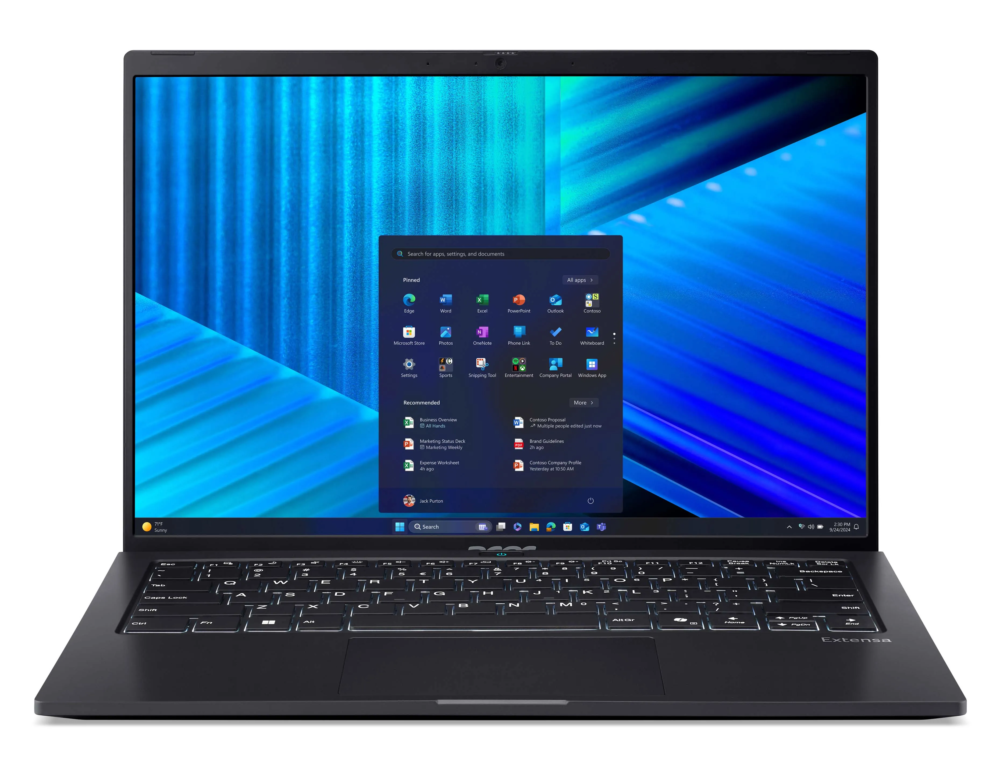

Główny Stack
- HTML5 (100%)
- Tailwind CSS
- CSS3 / Flexbox / Grid
- Responsive Design
W nauce
- React.js (Podstawy)
- JavaScript ES6+
- Node.js
- UI Design
Sprzęt, na którym pracuję

Główna Baza Projektowa
Acer Extensa 14
Twoje centrum dowodzenia
- Ultra 5 125H | Intel® Arc™ Graphics (działający jako Intel® Graphics) | 16GB RAM | 512GB SSD

Stacja Robocza
Komputer Stacjonarny
Używany głównie do formalności i zadań administracyjnych.